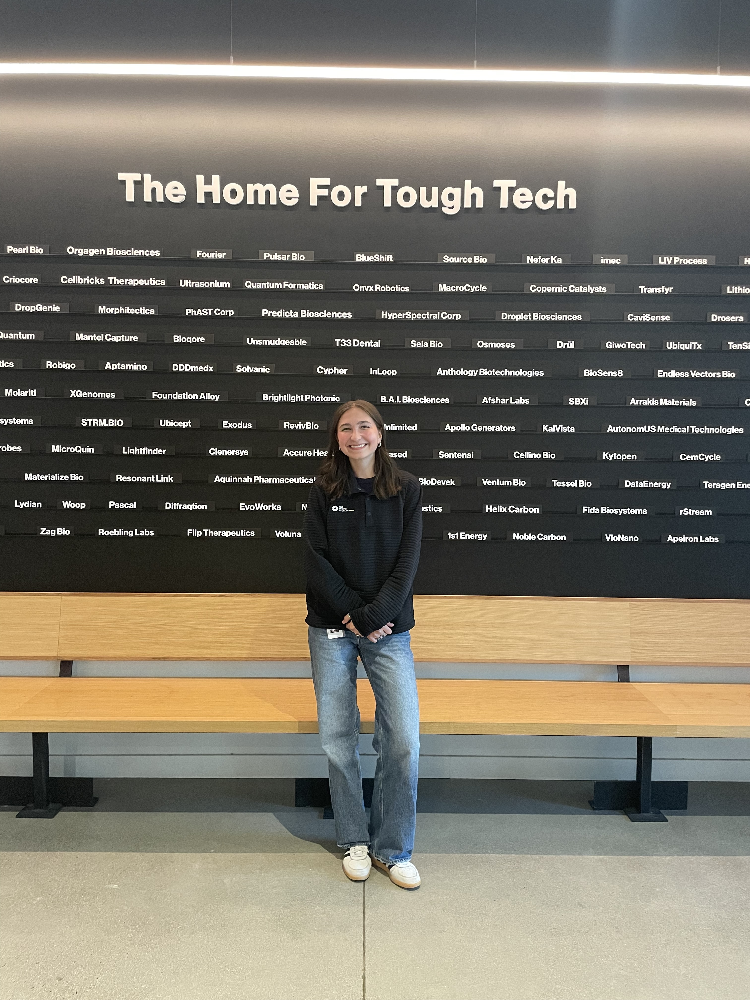

Helix Carbon
Helix Carbon is a cleantech startup at MIT's The Engine building electrochemical systems that convert CO₂ into syngas, a mix of CO and H₂ used to make fuels and chemicals. I worked on CO₂ electroreduction experiments and the literature behind them.
In the lab


Around The Engine